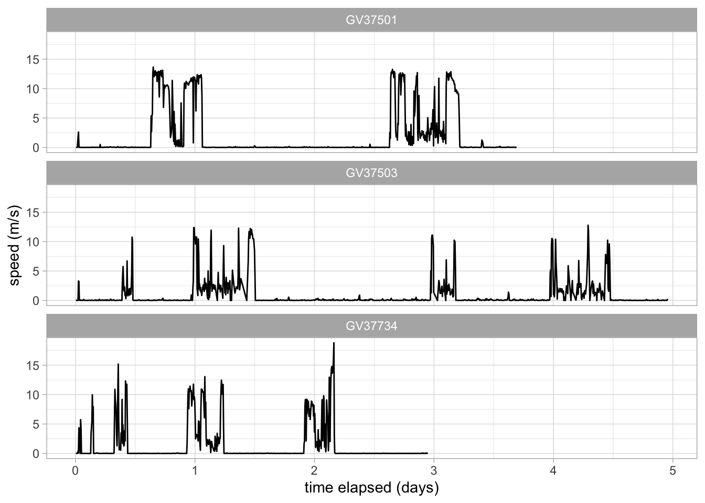

This user guide can be used as a walkthrough for reading and processing tracking data files with the Workflow.R script. You can use the example datasets provided in Data, or try with your own tracking data (see Pre-flight checks for details on data requirements and structure).
The following diagram gives an overview of the workflow (boxes link to each section):
%%{init:{'flowchart':{'nodeSpacing': 5, 'rankSpacing': 30}}}%%
flowchart LR
subgraph ALL [" "]
style ALL fill:none,stroke:none
S1[Read in data] ==> S3{Merge}
S2[Read in metadata] ==> S3 ==> A(Clean) ==> B(Process) ==> C(Save)
A --> A1((Shiny app)) --> B
B --->|"<br/> Summarise/<br/>Visualise"|C
B --> B1((Shiny app)) --> C
end
C --> D
C --> C1((Shiny app))
C ==> S{Analyses}
subgraph OPTIONAL ["OPTIONAL"]
style OPTIONAL fill:#fbfbfb, stroke:#999, stroke-width:px, stroke-dasharray:5 5
D(Filter) --> E(Save)
C1 --> D
D --->|"<br/> Summarise/<br/>Visualise"|E
end
E --> S
linkStyle 0,1,2,3,4,12 stroke-width:5px %% stroke:#00dca5 (this bit is how you edit colours of lines — no way to change colour of arrow heads)
%% NOTE: remember to update links for finalised user guide!!
click S1 "#read-in-data-files";
click S2 "#merge-with-metadata";
click S3 "#merge-with-metadata";
click A "#cleaning";
click B "#processing";
click C "#save-for-shiny";
click D "#filtering";
click E "#save-data";
click A1 "#shiny-app"
click B1 "#shiny-app"
click C1 "#shiny-app"
%% click ? "#summarise-data";
%% click ? "#visualisation-i";
Figure 1: Diagram of workflow used for analysing movement data (thick line denotes core path of workflow)
Use our example data sets in the Data folder (RFB_IMM, RFB, GWFG, TRPE) or provide your own data
User inputs
Some code chunks require editing by the user to match the specific dataset being used (particularly if you are using your own data), and are highlighted as below (the 🧠 indicates you will need to think about the structure and format of your data when making these edits!):
🧠 User input required
#--------------------### USER INPUT START ###--------------------#example_input<-"uservalue"# In the R code, user input sections appear like this#------------------### USER INPUT END ###------------------#
0. Pre-flight checks
How to use this workflow:
We will inspect the data before reading it in, so there is no need to open it in another program (e.g., excel, which can corrupt dates and times)
User-defined parameters (see user inputs) are called within the subsequent processing steps
Where you see: ## ** Option ** ##, there is an alternative version of the code to fit some common alternative data formats
Throughout, we will use some key functions to inspect the data (e.g., head for top rows, str for column types, and names for column names)
Required data structure:
Data files should all be stored in a specific place — ideally within the Data folder
Tracking data must contain a timestamp and at least one other sensor column
Data for each deployment/individual should be in a separate file
ID should be in tracking data file name, and should be the same length for all individuals
Metadata file should be in parent directory of data files
Metadata should contain one row per individual per deployment
The importance of ID:
Throughout this workflow, we use ID to refer to the unique code for an individual animal
In certain cases, you might have additional ID columns in the metadata (e.g., DeployID),
or read in data with a unique TagID instead of ID.
This code will work as long as all of the relevant info is included in the metadata
For more info and helpful code, see the FAQ document & troubleshooting script
How to troubleshoot problems if something doesn’t work with your data:
Refer to the FAQ document in the GitHub page
This signposts to helpful resources online (e.g., spatial co-ordinate systems)
See the troubleshooting code scripts that we’ve written to accompany this workflow (e.g., using multiple ID columns for re-deployments of tags/individuals)
All functions in code chunks are automatically hyperlinked to their documentation, so feel free to explore this if you want to understand more about how this code works!
Load required libraries
Just before starting we load in all the packages we will need for the workflow (also referenced in the Dependencies section).
Throughout the script, we’ll be saving files using a species code as a file/folder identifier. Let’s define this object here for consistency:
species_code<-"RFB_IMM"
Set filepath for the folder containing raw data files (this code will try to list and open all files matching the file pattern within this folder, so it is best if this folder contains only the raw data files).
filepath<-here("Data", "RFB_IMM")#create relative filepath using folder names
Define common file pattern to look for. An asterisk (*) is the wildcard, will will match any character except a forward-slash (e.g. *.csv will import all files that end with “.csv”).
filepattern<-"*.txt"# data file format (e.g. we'd use "*.csv" to import all csv files within filepath folders)
Let’s view the file names, to check that we have the files we want & find ID position (this list will include names of sub-folders).
Adjust these numbers for extracting the ID number from file name using stringr (e.g. to extract GV37501 from “GV37501_201606_DG_RFB.csv”, we want characters 1-7). NB: this approach only works if all ID’s are the same length and in the same position — see the str_sub documentation for other options.
IDstart<-1#start position of the ID in the filename IDend<-6#end position of the ID in the filename
Now, let’s inspect the data by reading in the top of the first data file as raw text. To inspect the first row of all data files (if you wanted to check column names), you can remove the [1] and change n_max = 1).
test<-fs::dir_ls(path =filepath, recurse =TRUE, type ="file", glob =filepattern)[1]read_lines(test, n_max =5)# change n_max to change the number of rows to read in
Define number of lines at top of file to skip (e.g. if importing a text file with additional info at top).
skiplines<-0
Define date format(s) used (for passing to lubridate) (d = day as decimal, m = month as decimal, y = year without century - 2 digits, Y = year with century - 4 digits). lubridate can even parse more than one date/time format within a dataframe, so if your data include multiple formats, make sure they are all included. Here, we’ve included some common combinations — modify if your data include a different format
date_formats<-c("dmY", "Ymd")#specify date formats (e.g. "dmY" works for 01-12-2022 and 01/12/2022)datetime_formats<-c("dmY HMS", "Ymd HMS")#specify date & time format
Define time zone for tracking data.
trackingdatatimezone<-"GMT"
By default, the below code will find column names from the first row of data. If you want to specify your own column names, do so here as a character vector, or use set colnames <- FALSE to automatically number columns.
colnames<-TRUE
Here, we use the function read_delim and specify the delimiter to make this code more universal (you can find extra information on this in the readr documentation).
Some delimiter examples:
"," = comma delimited (equivalent to using read_csv – saved as extension .csv)
"\t" = tab delimited (equivalent to using read_tsv — saved as extension .tsv)
" " = whitespace delimited (equivalent to using read_table)
Let’s inspect the data again, this time skipping rows if set, to check the file delimiter.
user_delim<-"\t"user_trim_ws<-TRUE# Should leading/trailing whitespaces be trimmed from each field before parsing?
Finally, data need an ID column, either be the tag ID (“TagID”) or individual ID (“ID”). Specify ID type here, for later matching with the same column in the metadata:
With the user inputs specified in the previous section, we’ll now read in and merge all tracking data files directly from the github repository, extracting the ID from the filename of each file.
df_combined<-fs::dir_ls(path =filepath, glob =filepattern, #use our defined filepath and pattern type ="file", recurse =TRUE)%>%# recurse = T searches all sub-folderspurrr::set_names(nm =basename(.))%>%# removing path prefix (makes filename more manageable)purrr::map_dfr(read_delim, .id="filename", #read all the files in using filename as ID column col_types =cols(.default ="c"), col_names =colnames, skip =skiplines, delim =user_delim, trim_ws =user_trim_ws)%>%mutate("{ID_type}":=str_sub(string =filename, start =IDstart, end =IDend), #substring ID from the filename (start to end of substring) .after =filename)#position the new ID column after filename columndf_combined
If your data are combined into one or multiple csv files containing an ID column, use the following approach instead (this is the same code, but doesn’t create a new ID column from the file name):
# ** Option **df_combined<-fs::dir_ls(path =filepath, recurse =TRUE, type ="file", glob =filepattern)%>%# recurse = T searches all sub-folderspurrr::map_dfr(read_delim, col_types =cols(.default ="c"), col_names =colnames, skip =skiplines, delim =user_delim, trim_ws =user_trim_ws)df_combined
First, data need a time stamp, either in separate columns (e.g., “Date” and “Time”) or combined (“DateTime”). Below we specify which column’s date and time info are stored in the data. NB: These have to be in the same order as specified in earlier user input, i.e. “Date” and “Time” have to be the right way round
datetime_formats# a reminder of the datetime orders previously specified
[1] "dmY HMS" "Ymd HMS"
datetime_colnames<-c("DateTime")# or c("Date", "Time")
You can also have additional columns depending on the type of logger used, for example:
## lc = Argos fix quality## Lat2/Lon2 = additional location fixes from Argos tag## laterr/lonerr = location error information provided by some GLS processing packages
Here we’re going to slim down the dataset by selecting the necessary columns & coercing some column names. You should change column names below to those present in your tracking data, additional columns can be added (see above examples). This process standardises important column names for the rest of the workflow (e.g., TagID, Lat, Lon)
Here’s an example of how to change the above code for data with different columns and column names. This code works with immersion data recorded by a GLS logger (no location data)
df_slim<-data.frame(ID =df_combined$ID, Date =df_combined$`DD/MM/YYYY`, Time =df_combined$`HH:MM:SS`, Immersion =df_combined$`wets0-20`)
Parse dates, create datetime, date and year columns
Now our df_slim is ready, we need to create a DateTime column. Using the datetime_colnames object we made previously, we’ll combine columns (if needed), and then parse a single DateTime column using the lubridate package:
df_slim<-df_slim%>%tidyr::unite(col ="DateTime_unparsed", all_of(datetime_colnames), sep =" ", remove =FALSE)%>%mutate(DateTime =lubridate::parse_date_time(DateTime_unparsed, #use lubridate to parse DateTime orders=datetime_formats, #using the datetime_formats object we made earlier tz=trackingdatatimezone), Date =as_date(DateTime), Year =year(DateTime))%>%select(-DateTime_unparsed)
Note
If you see any failed to parse warnings, this means a date or time was not in the correct format for lubridate to create a date_time object, producing NA’s (which will be dealt with later). We can look at the failing rows using the following code:
Metadata are an essential piece of information for any tracking study, as they contain important information about each of your data files, such as tag ID, animal ID, or deployment information, that we can add back into to our raw data when needed. For example, the table below shows what the first few columns of a metadata file looks like for our example immature red-footed booby data:
Then much like in Step 1, we define the date format(s) used (for passing to lubridate) (d = day as decimal, m = month as decimal, y = year without century - 2 digits, Y = year with century - 4 digits). Here, we’ve included common combinations, which you’ll need to modify if your metadata include a different format (run OlsonNames() to return a full list of time zones names).
metadate_formats<-c("dmY", "Ymd")#specify date format used in metadatametadatetime_formats<-c("dmY HMS", "Ymd HMS")#specify date & time formatmetadatatimezone<-"Indian/Chagos"#specify timezone used for metadata
Next we read in the metadata file (make sure to check the read_ function you’re using matches your ddata format!).
df_metadata<-readr::read_csv(filepath_meta)# Read in metadata filenames(df_metadata)
Then we select necessary comments & coerce column names, making sure to provide four compulsory columns: ID — as defined in tracking data (individual ID or TagID), deployment date & deployment time. We can also provide optional columns depending on sensor type: e.g. colony, sex, age, central place (CP) Lat, CP Lon. Depending on whether you know the CP for each individual, you can use one of the two following approaches, and delete columns where appropriate. NB: Different tags types sometimes require specific approaches for dealing with data collected outside of deployment period (e.g., before deployment or after retrieval). If data need to be filtered for one or both of these scenarios, we need to sort out these columns in the metadata, and if not relevant for the data, set column name to “NA”.
If you have multiple ID columns like TagID/DeployID, include them here (for example, if one individual was tracked over multiple deployments/years, or if one tag was re-deployed on multiple individuals). For more information and helpful code, see the FAQ document and troubleshooting script.
df_metadataslim<-data.frame(ID =as.character(df_metadata$bird_id), # compulsory column TagID =as.character(df_metadata$Tag_ID), DeployID =as.character(df_metadata$Deploy_ID), DeployDate_local =df_metadata$capture_date, # compulsory column (set to NA if not relevant) DeployTime_local =df_metadata$capture_time, # compulsory column (set to NA if not relevant) RetrieveDate_local =NA, # compulsory column (set to NA if not relevant) RetrieveTime_local =NA, # compulsory column (set to NA if not relevant) DeployLat =df_metadata$lat, DeployLon =df_metadata$long, Species ="RFB", Age =df_metadata$age)
If central place for each individual is not known, you can add population-level central places here by first creating a custom dataframe of population CPs:
Then we can merge df_metadataslim and df_PopCPs. The Population column must be present in both dataframes (this codes uses the %<>% pipe, so will overwrite CPLat and CPLon if these are present in df_metadataslim).
Format all dates and times, combine them and specify timezone (NA’s in deployment/retrieval date times will throw warnings, but these are safe to ignore if you know there are NA’s in these columns).
df_metadataslim<-df_metadataslim%>%mutate(Deploydatetime =parse_date_time(paste(DeployDate_local, DeployTime_local),#create deploy datetime order=metadatetime_formats, tz=metadatatimezone), Retrievedatetime =parse_date_time(paste(RetrieveDate_local, RetrieveTime_local), #create retrieve datetime order=metadatetime_formats, tz=metadatatimezone))%>%select(-any_of(c("DeployDate_local","DeployTime_local", "RetrieveDate_local", "RetrieveTime_local")))%>%mutate(across(contains('datetime'), #return datetime as it would appear in a different tz~with_tz(., tzone=trackingdatatimezone)))
Warning: There was 1 warning in `mutate()`.
ℹ In argument: `Retrievedatetime = parse_date_time(...)`.
Caused by warning:
! All formats failed to parse. No formats found.
Here we’ll create a dataframe of temporal extents of our data to use in absence of deploy/retrieve times (this is also useful for basic data checks and for writing up methods).
Define a vector of columns which can’t have NAs (if there are NAs in one of these columns the problematic row will be removed).
na_cols<-c("Lat", "Lon", "DateTime", "ID")#column to check for na's
Now we pipe the data through a series of functions to drop NAs in specified columns, filter out user-defined no_data_values in LatLon columns, remove duplicates, remove undeployed locations and filter out locations within temporal cut-off following deployment.
df_clean<-df_metamerged%>%drop_na(all_of(na_cols))%>%filter(!Lat%in%No_data_vals&!Lon%in%No_data_vals)%>%# remove bad data values in Lat Lon columnsdistinct(DateTime, ID, .keep_all =TRUE)%>%# this might be a problem for ACC data missing milliseconds, so beware if using it for this purpose!filter(case_when(!is.na(Retrievedatetime)~Deploydatetime<DateTime&DateTime<Retrievedatetime, # keep deployment period, only .default =Deploydatetime<DateTime))# if retrieve date is NA (i.e., tags submit via satellite), only filter by deploy datehead(df_clean)
Argos fix quality can be used to filter the data set to remove locations with too much uncertainty. If you know the error classes that you want to retain in this dataset, you can run this filter below. NB: If you want to do further exploration of location quality (e.g., from GPS PTT tags to compare locations with contemporaneous GPS locations), keep all location classes by skipping this step.
In this code we define a vector of location classes to keep (typically, location classes 1, 2, and 3 are of sufficient certainty), and filter out everything else.
lc_keep<-c("1", "2", "3")df_clean<-df_clean%>%filter(lc%in%lc_keep)# filter data to only retain location classes in lc_keephead(df_clean)
rm(list=ls()[!ls()%in%c("df_clean", "species_code")])#specify objects to keep
4. Processing
Some useful temporal and spatial calculations on the data
🧠 User input required
First we need to specify the co-ordinate projection systems for the tracking data and meta data. The default here is lon/lat for both tracking data & metadata, for which the EPSG code is 4326. For more information see the CRS section of the FAQ’s or have a look at the ESPG.io database.
tracking_crs<-4326# Only change if data are in a different coordinate systemmeta_crs<-4326# Only change if data are in a different coordinate system
Next we transform coordinates of data, and perform spatial calculations. This requires spatial analysis, and so it is good practice to run all spatial analyses in a coordinate reference system that uses metres as a unit.
As an example, we will use Spherical Mercator projection — aka “WGS” (crs = 3857). It’s important to consider the location and scale of your data (e.g., equatorial/polar/local scale/global scale) when choosing a projection system. Other options include (but are not limited to) UTM, and Lambert azimuthal equal-area (LAEA).
Here we’ll calculate bearings relative to first location.
df_diagnostic<-df_clean%>%ungroup()%>%#need to ungroup to extract geometry of the whole datasetmutate(geometry_GPS =st_transform(# assign geometry and transform to WGS for distance calculationsst_as_sf(., coords=c("Lon","Lat"), crs=tracking_crs), crs =3857)$geometry, geometry_first =st_transform(st_as_sf(slice(., 1), coords=c("Lon","Lat"), crs=tracking_crs), crs =3857)$geometry)%>%group_by(ID)%>%#back to grouping by ID for calculations per individualmutate(dist =st_distance(geometry_GPS, lag(geometry_GPS), by_element =T), # distance travelled from previous fix difftime =difftime(DateTime, lag(DateTime), units="secs"), # time passed since previous fix netdisp =st_distance(geometry_GPS, geometry_first, by_element =T), # calculate distance between first location and current location speed =as.numeric(dist)/as.numeric(difftime), # calculate speed (distance/time) dLon =as.numeric(Lon)-lag(as.numeric(Lon)), #difference in longitude, relative to previous location dLat =as.numeric(Lat)-lag(as.numeric(Lat)), #difference in longitude, relative to previous location turnangle =atan2(dLon, dLat)*180/pi+(dLon<0)*360)%>%#angle (in degrees) from previous to current location using formula theta = atan(y/x), where y = change along y axis & x = change along x axisungroup()%>%select(-c(geometry_GPS, dLon, dLat))# ungroup and remove geometries
Option: CP data included
If your data include a Central Place location, you can also run the following code to calculate bearings relative to CP
## ** Option ** ##df_diagnostic<-df_diagnostic%>%ungroup()%>%#need to ungroup to extract geometry of the whole datasetmutate(geometry_GPS =st_transform(#assign geometry and transform to WGS for dist calcsst_as_sf(., coords=c("Lon","Lat"), crs=tracking_crs), crs =3857)$geometry, geometry_CP =st_transform(#assign geometry and transform to WGS for dist calcsst_as_sf(., coords=c("CPLon","CPLat"), crs=meta_crs), crs =3857)$geometry)%>%group_by(ID)%>%#back to grouping by ID for calculations per individualmutate(CPdist =st_distance(geometry_GPS, geometry_CP, by_element =T), #calculate distance between central place and current location dLon_CP =as.numeric(Lon)-CPLon, #difference in longitude between current location and central place dLat_CP =as.numeric(Lat)-CPLat, #difference in longitude between current location and central place CPbearing =atan2(dLon_CP, dLat_CP)*180/pi+(dLon_CP<0)*360)%>%#bearing (in degrees) from central place to current location using formula theta = atan(y/x), where y = change along y axis from CP & x = change along x axis from CPungroup()%>%select(-c(geometry_GPS, geometry_CP, dLon, dLat, dLon_CP, dLat_CP))#ungroup and remove geometries
5. Save for Shiny
Here we’re going to save df_diagnostic to use in the Shiny app provided. The app is designed to explore how further filtering and processing steps affect the data.
🧠 User input required
First, we use here to create a file path for saving the working dataframe files, and create the folder if missing
filepath_dfout<-here("DataOutputs","WorkingDataFrames")# create filepathdir.create(filepath_dfout)# create folder if it doesn't exist
Next we define file name for the saved file by pasting the species code before _diagnostic (can change this if you want to use a different naming system).
Remove everything except df_diagnostic ahead of the next step.
rm(list=ls()[!ls()%in%c("df_diagnostic", "species_code")])#specify objects to keep
6. Filtering
This second filtering stage is designed to remove outliers in the data, and you can use outputs from the Shiny app to inform these choices. If you don’t need to filter for outliers, skip this step and keep using df_diagnostic in the next steps.
Upload your csv version of df_diagnostic to the app by clicking the Upload data button in the top left.
At the bottom of each app page are printed code chunks that can be copied into subsequent user input section. These code chunks contain the user input values you manually select in the app
Define threshold values
🧠 User input required
First we define a period to filter after tag deployment, when all points before the cutoff will be removed (e.g. to remove potentially unnatural behaviour following the tagging event). We define this period using the as.period function, by providing an integer value and time unit (e.g. hours/days/years). This code below specifies a period of 30 minutes:
Then we define speed threshold in m/s, which we will use to remove any points with faster speeds.
filter_speed<-20
Next we define a net displacement (distance from first point) threshold and specify units. Any points further away from the first tracking point will be removed (see commented code for how to retain all points):
filter_netdisp_dist<-200filter_netdist_units<-"km"# e.g., "m", "km"#If you want to retain points no matter the net displacement value, use these values instead:#filter_netdisp_dist <- max(df_diagnostic$netdisp)#filter_netdist_units <- "m"
Implement filters
Create net displacement filter using distance and units
df_filtered<-df_diagnostic%>%filter(Deploydatetime+filter_cutoff<DateTime, # keep times after cutoffspeed<filter_speed, # keep speeds slower than speed filternetdisp<=filter_netdisp)# keep distances less than net displacement filterhead(df_filtered)
rm(list=ls()[!ls()%in%c("df_filtered", "species_code")])#specify objects to keep
7. Summarise cleaned & filtered tracking data
🧠 User input required
Set the units to display sampling rate in the summary table
sampleRateUnits<-"mins"
Define levels of grouping factors to summarise over
Firstly, down to population level. Here, we are working on data from one population & year, and so use Species as the grouping factor. Add any other relevant grouping factors here (e.g. Country / Year / Season / Age).
Create a summary table of individual-level summary statistics:
df_summary_ind<-df_filtered%>%group_by(across(c(all_of(grouping_factors_poplevel), all_of(grouping_factors_indlevel))))%>%summarise(NoPoints =NROW(ID), # number of fixes NoUniqueDates =length(unique(Date)), # number of tracking dates FirstDate =as.Date(min(Date)), # first tracking date LastDate =as.Date(max(Date)), # last tracking date SampleRate =mean(as.numeric(difftime, units =sampleRateUnits), na.rm =T), # sample rate mean SampleRate_se =se(as.numeric(difftime, units =sampleRateUnits)))# sample rate standard error
`summarise()` has grouped output by 'Species'. You can override using the
`.groups` argument.
Create a table of population-level summary statistics:
df_summary_pop<-df_summary_ind%>%# use the individual-level summary datagroup_by(across(grouping_factors_poplevel))%>%summarise(NoInds =length(unique(ID)), # number of unique individuals NoPoints_total =sum(NoPoints), # total number of tracking locations FirstDate =as.Date(min(FirstDate)), # first tracking date LastDate =as.Date(max(LastDate)), # last tracking date PointsPerBird =mean(NoPoints), # number of locations per individual: mean PointsPerBird_se =se(NoPoints), # number of locations per individual: standard error DatesPerBird =mean(NoUniqueDates), # number of tracking days per bird: mean DatesPerBird_se =se(NoUniqueDates), # number of tracking days per bird: standard error SampleRate_mean =mean(SampleRate), # sample rate mean SampleRate_se =se(SampleRate))# sample rate standard errordf_summary_pop
Here we define file names for saved files, and paste the species code to _summary_, followed by ind (individual level) or pop (population level). You can change this if you want to use a different naming system.
We plot maps over a topography base-layer which can include terrestrial (elevation) and marine (bathymetry/water depth) data. To set legend label for topography data, relevant to your data.
topo_label="Depth (m)"
Load additional libraries for spatial visualisation (optional)
If you see a masking warning these are fine. Watch out for packages that aren’t installed yet
map_alllocs<-map_base+# add GPS pointsgeom_point(data =df_plotting, aes(x =Lon, y =Lat), alpha =0.8, size =0.5, col ="violetred3")map_alllocs
Plot a map of individual locations, colouring points by speed, and faceting by ID
map_individuals<-map_base+# add GPS points and paths between themgeom_point(data =df_plotting, aes(x =Lon, y =Lat, col =speed), alpha =0.8, size =0.5)+geom_path(data =df_plotting, aes(x =Lon, y =Lat, col =speed), alpha =0.8, size =0.5)+# colour birds using scale_colour_gradient2scale_colour_gradient2(name ="Speed", low ="blue", mid ="white", high ="red", midpoint =(max(df_plotting$speed,na.rm=TRUE)/2))+# `midpoint` argument ensures an even transition of color across speed value# facet for individualfacet_wrap(~ID, ncol =round(sqrt(n_distinct(df_plotting$ID))))
Warning: Using `size` aesthetic for lines was deprecated in ggplot2 3.4.0.
ℹ Please use `linewidth` instead.
map_individuals

In previous plots, we’ve split the population into individual facets. This works fine on the example code, where we only have a few individuals, but if you have more individuals and the facets are too small, you can split the plot onto multiple pages. Use the below code to use facet_wrap_paginate from the ggforce package:
## ** Option ** #### save plot as object to later extract number of pages## e.g., with 2 per page:map_individuals<-map_base+# add GPS points and paths between themgeom_point(data =df_plotting, aes(x =Lon, y =Lat, col =speed), alpha =0.8, size =0.5)+geom_path(data =df_plotting, aes(x =Lon, y =Lat, col =speed), alpha =0.8, size =0.5)+# colour birds using scale_colour_gradient2scale_colour_gradient2(name ="Speed", low ="blue", mid ="white", high ="red", midpoint =(max(df_plotting$speed,na.rm=TRUE)/2))+##facet for individualfacet_wrap_paginate(~ID, ncol =2, nrow=1, page =1)
How many pages of plots?
n_pages(map_individuals)
Run through different values of page to show each page in turn
Create a time series plot of speed, faceted for each individual.
speed_time_plot<-df_plotting%>%#speed over timeggplot(data=., aes(x=days_elapsed, y=speed, group=ID))+# add line of speed over timegeom_line()+# add axis labelsxlab("time elapsed (days)")+ylab("speed (m/s)")+# facet by individualfacet_wrap(~ID, nrow=round(sqrt(n_distinct(df_plotting$ID))))+# set plotting themetheme(axis.text=element_text(colour="black"))+theme_light()speed_time_plot
Note
Warnings about non-finite values for speed/step length plots are expected and usually refer to the first location for each individual (i.e. number of non-finite values should be equal to number of individuals)
Create a time series plot of step lengths (faceted for each individual)
step_time_plot<-df_plotting%>%#step length over timeggplot(data=., aes(x=days_elapsed, y=as.numeric(netdisp), group=ID))+geom_line()+# add plot labelsxlab("time elapsed (days)")+ylab("Distance from first fix (m)")+# facet by individualfacet_wrap(~ID, nrow=round(sqrt(n_distinct(df_plotting$ID))))+# set plotting themetheme(axis.text=element_text(colour="black"))+theme_light()step_time_plot
![]()